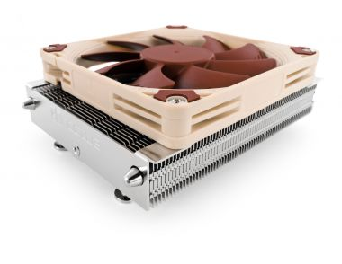
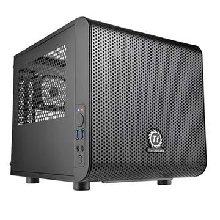
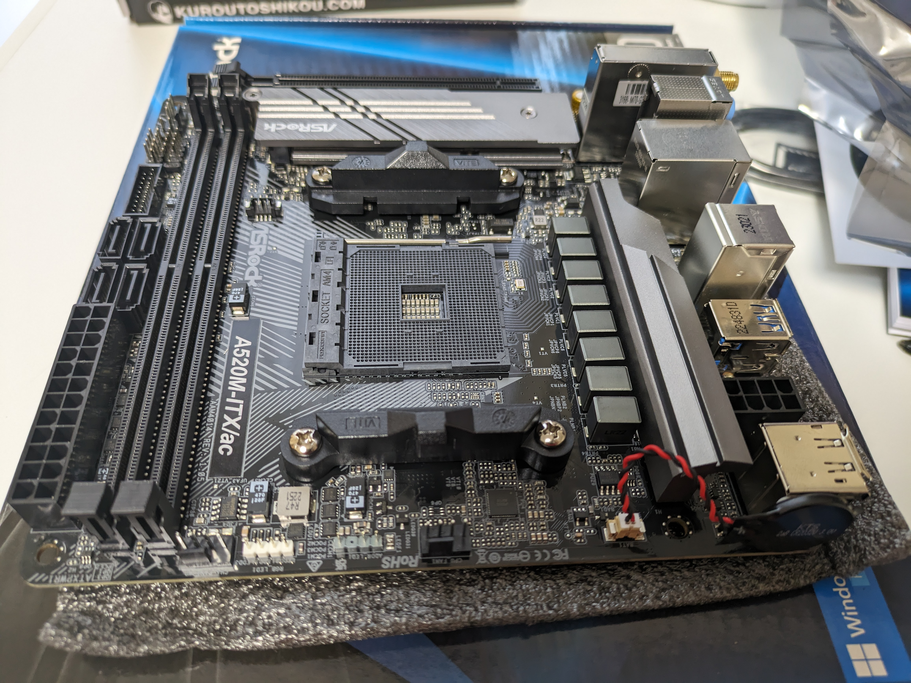
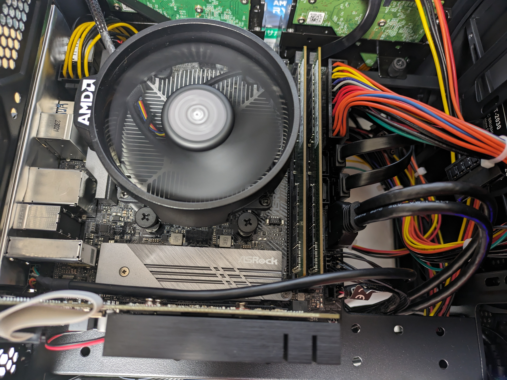
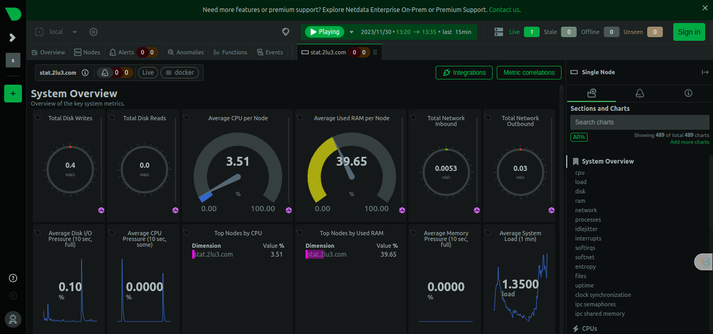
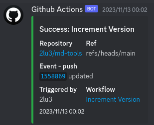

自宅サーバーと医学科での使用例
Posted on 火 28 11月 2023 in プログラミング
本記事の対象者
- 自宅サーバーを作りたい人
- 自宅サーバーを運用したい人
- サブスクリプションサービスをself hosted serviceで置換したい人
- botを作りたい人
概要
自宅サーバー編 * パーツ選定・組み立て * 初期設定 * まだ導入していないがやりたいこと
サービス編 * Slackbot * Discordbot * Nextcloud * Gitlab * Netdata
その他
おわりに
自宅サーバー編
パーツ選定
自宅サーバーは人の目に触れないため見た目より性能重視、かつ家のスペースがあまりないので小さい、性能・安全に関係ないところはケチって重要な部品にお金をかけるという方針でパーツの選定を行いました。
早速ですが、下のパーツを選びました。順に説明します。
| 名称 | 型番 | 値段 |
|---|---|---|
| CPU | Ryzen 5 3600 | 10000 |
| GPU | 玄人志向 GeForce GT-730 | 5800 |
| メモリ | 家に落ちてた16GB x 2 | 不明 |
| SSD | 家に落ちてた1TB | 不明 |
| HDD | 家に落ちてた6TB(WD Blue) x 2 | 不明 |
| CPUファン | Noctua NH-L9a | 7200 |
| ケース | Thermaltake Core V1 | 7258 |
| ケースファン(2個) | Noctua NF-A8 | 5300 |
| 電源 | 玄人志向 KRPW-L5-500W | 5636 |
| マザーボード | ASRock A520 M-ITX | 16136 |
| 合計 | 57330 |
CPUは性能が低いが消費電力も低いCeleronが使われますが、私は複数のサービスを運用したいため消費電力が高くなっても性能が比較的良いRyzen 5 3600を選定しました。後述しますが自宅サーバーとしては満足な性能なためワンランク性能が低いCPUでもよかったかもしれないです。CPUは故障しにくいので、メルカリで中古を買うことで安く購入しました。参考までにCPUの性能を示すベンチマークの表を下に示します。
| CPU名 | R23 ベンチマーク | 説明 |
|---|---|---|
| Intel i9 14900K | 41193 | 現在最強のCPU |
| Ryzen 9 5950X | 28641 | 1世代前最強のCPU |
| Ryzen 5 3600 | 9150 | 今回購入したCPU |
| Celeron J4125 | 1541 | 2019年発売のCeleron |
GPUは安価なGT-730を選びました。OSのインストールにはGPUが必要なのでGPU内臓のCPUかGPUが必要ですが、私はAI生成などハイエンドGPUを使うタスクをするつもりがなかったので、安さで選びました。ただし、電気代的な意味でファンレスのGT-710にすればよかったと若干後悔しています。もし、GPU内蔵CPUを選んでいたらGPUを購入する必要はないのですが、今後GPUが壊れたかもしれないときに正常に動作するGPUが動作確認用に欲しかったので選びました。
HDDは同じメーカーのものを使用したのですが、RAID(後述)にするのでメーカーを揃えないほうが良かったです。今回採用したRAID1は同時にHDDが壊れるのは1台までという前提条件がありますが、同じメーカーだと同じタイミングで故障する可能性が高くなるからです。また、4台ぐらい使ってRAID6を組みたかったのですが、金銭的な問題で諦めました。
CPUファンはNoctuaのNH-L9aを選定しました。静音性、トップフロー型、ロープロファイルが特徴です。自宅サーバーの場合就寝するときにうるさいと困るため、冷却力に対して静音性に定評があるNoctuaを購入しました。高級と言われているだけあり私は好みのデザインです。ただ、ケースの高さからすると小型のサイドフロー型のCPUファンでも搭載することができ、そちらのほうが冷却性能が高いのでそちらにすればよかったと後悔しています。
 Noctua HPより
ケースを選定する際に重要視したことは、HDDを複数搭載できて、冷却性能が高く、できるだけ小さいことです。HDDを複数搭載する理由は、後述するRAIDを構成するために最大2つのHDDが必要だからです。小さめであることは家のスペース的に必須条件でした。Youtubeや価格.comで見た目が好きなものをピックアップして選びました。
 ThermalTake HPより
ケースファンは同じく静音性の観点でNoctuaを選定しました。おかげで夜中も全くうるさくないです。
電源の容量をドスパラの電源電卓で計算して、私の推しである玄人志向のものを購入しました。私が電源を選定するときに見るポイントは
- 有名メーカーであること
- 80PLUSの表示
です。1つ目はSILVERSTONE, Thermaltake, Cooler Master, Corsair, 玄人志向, ASUS, MSI, NZXTなど(他にもあります)などの有名なメーカーだと安心して買っています。2つ目は80PLUSという認証のロゴをチェックします。80PLUSにはSTANDARDからTITANIUMまで6つの段階があり、段階が上がるほど変換効率が高くなっていきます。パソコンの消費電力が決まるとどれくらいの電源を購入するべきかが決まるので下の記事を参考にして決めてみましょう。
80PLUSで消費電力はどう変化するのか？ STANDARDからTITANIUMの電源でチェック！ Text by 林 佑樹｜ものテクアーカイブス｜パソコン（PC）通販のドスパラ【公式】
マザーボードは、Mini-ITXという最小の規格を選びました。これは先述したように家のスペースの問題から小さな自宅サーバーにする必要があるためです。そのため、拡張性が犠牲になっています。この無骨さが好きです。

組み立て

適当なYoutubeの動画と説明書を参照しながら組み立てしました。
マザボにピンを指すときに違う場所に刺さないように気をつける以外は特に難しいことはなかったです。
嘘です。以下の点に気をつけながら作業していました。
- CPUがピン折れしないように丁寧に扱う
- グリスの量が多すぎないようにテストしながら決めた
- メンテ性のために各種ケーブルの配線が絡まないようにした
- ケーブルがファンに絶対に巻き込まれないように結束バンドで固定した
- 部品を取り付ける順番により組み立て難易度が上下する
配線を終わらせて起動確認をしたときの画像↓
CPUファンが美しく(←?)回転していますね。

初期設定
Ubuntuのインストールから、最低限のセキュリティ対策、そしてドメインから自宅サーバーにアクセスできるように設定します。
Ubuntuのインストール
使い慣れているという理由でUbuntu serverを選びましたが、DebianやCentOSを選んでもよいです。
OSをインストールするには、Live USBを作成する必要があります。
普段使いのPCのOSにより、↓のサイトを参考にしてください。
- windows / mac
- balenaEtcherを使ってUbuntu ServerのLive USBを作成する方法
- Linux
- 上のサイトに加えて↓も
- Ubuntu 20.04 に balenaEtcher をインストールする方法を解説
Live USBができたら、Ubuntuのインストールです。
【初心者でもわかる】Ubuntuのインストール方法まとめなどを参考にしてください。
Ubuntuの初期設定
sshできるまでは自宅サーバーに直接モニターとキーボードを使って操作する必要があります。
ユーザーの作成
ubuntu ユーザを追加して sudo 権限をつけるを参考に、普段使うユーザーを作成してsudo権限を付与してください。
SSHの設定
下の注意点を先に読んでから、SSH｜Ubuntu 22.04サーバー構築入門を実行してください。
- sshする際に
sv1.example.com
が使われていますが、これは自宅サーバーのipアドレスにしてください
- 後述するDNSの設定ができるまで、クライアント(普段使っているPC)と自宅サーバーは同じwifiに接続してください
- ipアドレスは、自宅サーバーでUbuntuで自身のIPアドレス確認コマンドを実行して調べてください
-
192.168から始まるアドレスがipアドレスです
-
最後の
/etc/ssh/sshd_config
では、
PasswordAuthentication
だけでなく
PermitRootLogin no
も変更してください
- rootユーザーでログインできないようにするためのものです
ファイアウォールの設定
ファイアウォールは使わないポートを閉じるためのものです。
不要なポートを開放しておくことはセキュリティリスクになりえます。
# ufw の起動
$ systemctl start ufw
# ufwの有効化
$ sudo ufw enable
# sshに使うportは22番
$ sudo ufw allow 22 comment "ssh"
# 追加した番号が許可されているか確認する
$ sudo ufw status
To Action From
-- ------ ----
22 ALLOW Anywhere
22 (v6) ALLOW Anywhere (v6)
# webサービスを公開する場合、80番と443番を公開する
$ sudo ufw allow 80 comment "http"
$ sudo ufw allow 443 comment "https"
# 許可したport以外からは拒否する
$ sudo ufw default deny
Dockerの導入
世の中に公開されているプログラムはDockerで実行できる形式のものが多いです。
メリットはDockerのメリットに書いてあります。
下の記事にしたがってコマンドを実行してください
-
Docker composeのインストール
bash
sudo apt-get install docker-compose-plugin
簡便のために、1つ目の記事に記載されている実行するべきコマンドを下にコピペしたのでそちらでも大丈夫です。
DockerのApt repositoryの設定
# Add Docker's official GPG key:
sudo apt-get update
sudo apt-get install ca-certificates curl gnupg
sudo install -m 0755 -d /etc/apt/keyrings
curl -fsSL <https://download.docker.com/linux/ubuntu/gpg> | sudo gpg --dearmor -o /etc/apt/keyrings/docker.gpg
sudo chmod a+r /etc/apt/keyrings/docker.gpg
# Add the repository to Apt sources:
echo \\
"deb [arch="$(dpkg --print-architecture)" signed-by=/etc/apt/keyrings/docker.gpg] <https://download.docker.com/linux/ubuntu> \\
"$(. /etc/os-release && echo "$VERSION_CODENAME")" stable" | \\
sudo tee /etc/apt/sources.list.d/docker.list > /dev/null
sudo apt-get update
Dockerのインストール
sudo apt-get install docker-ce docker-ce-cli containerd.io docker-buildx-plugin docker-compose-plugin
Docker engineが正常にインストールされているか確認する
sudo docker run hello-world
IPアドレスの固定
Ubuntu 22.04 LTS でIPを固定にしたがってIPアドレスを固定してください。
もしくは、ルーター側からMACアドレスを使ってIPアドレスを固定することもできます。(詳細はググって）
好きな方を選んでください。
外部からアクセスできるようにする
ドメインの購入
ドメインは無料で取得することもできますが、下の点で購入をおすすめします。自宅サーバーを24時間365日稼働させると電気代だけで万/年いくはずなのでそれと比べると安いと言えます。
- デメリットが多い
- 自由度が少ない
- 詳しくはググって
- 費用が安い
- ドメインは初期費用1000円、年1000円程度で維持できる
ドメインを購入できるサイトはお名前.comなどがありますが、実務ではAWSが使われることが多いと聞くので勉強のためにAWS Route 53を選びました。
Route 53 でドメインを取得・購入する（2019版）にしたがって購入してください。
ルーターの設定
ポート変換を使って、22,80,443番のポートに来たデータを自宅サーバーに渡すように設定します。
2台のルータでDMZを用いたネットワークを構築し安全に自宅サーバを公開するを読み、セキュリティのために2台のルーターを使って自宅サーバー用ネットワークと普段使い用ネットワークを分けることにしました。
セキュリティリスクを許容できるなら1台でも大丈夫です。
DDNSの設定
自宅で契約しているインターネットはグローバルIPアドレスがないと思います。グローバルIPアドレス付きの回線は一般に高価です。そもそも、グローバルIPアドレスのメリットは自宅サーバーのIPアドレスはこれだ！と不変であることです。逆に言えば、グローバルでないIPアドレス(プライベート IPアドレス)は数日おきに変更される可能性がありますが変更をその都度反映できればプライベートIPアドレスでも問題ありません。これをDDNSといいます。
今回は、ddns-route53を使い現在のIPアドレスを定期的にAWS Route 53に反映させることでグローバルIPアドレスを持っていなくても毎回ドメイン(google.comなど)を入力することで私のサーバーにアクセスできるようになりました。
ちなみに、ddns-route53は後述するdockerのコンテナとして動かしています。
RAIDの作成
下の記事を参考にRAID1を構築しました。ストレージ6TB x 2もあったので、最初の同期に数日かかってました。
mdadmを用いたソフトウェアRAIDの管理 #RAID - Qiita
そもそも、RAIDとは複数台のストレージを同時に運用し、1台もしくは複数台が同時に故障してもサービスを継続したままHDDの交換ができるものです。RAIDにはいくつか種類があるのですが、今回私が使ったのはRAID1という2台のHDDをミラーリング(同期)するという方法です。詳細はRAIDの種類と構成について｜RAID5、RAID1+0、RAID6｜データ復旧を参考にしてみてください。通常はRAID専用のNASと呼ばれるパソコンを購入するのですが、自分でRAIDを構築したくなったので自宅サーバーで直接RAIDを構築しています。
自宅作業用PCの設定
自宅で普段使っているPCから自宅サーバーにドメインでアクセスすることはできませんでした。そのため、/etc/hostsを編集して2lu3.comにアクセスすると自宅サーバーのローカルipアドレスに行くように設定しました。
まだ導入していないがやりたいこと
Cloudflare
Cloudflareを介してのみ自宅サーバーにアクセスするように設定すると、ハッカーからはCloudflareしか見えないため直接自宅サーバーを攻撃することができません。そのため、セキュリティ的にさらに安全になります。
実際、私の自宅サーバーのアクセスログを見るとWordpressなどの脆弱性を突くようなURLにアクセスしようとしていました。
Dockerのサービスデプロイと運用
↓は私の使っている設定ファイルの一部です。順に説明していきます。
version: "3"
services:
https-portal:
image: steveltn/https-portal:1
ports:
- 80:80
- 443:443
environment:
STAGE: 'production'
DOMAINS: >-
nextcloud.2lu3.com -> http://nextcloud:80,
stat.2lu3.com -> http://stat:19999,
${BASIC_USER}:${BASIC_PASS}@log.2lu3.com -> http://viewer:9292,
onedev.2lu3.com -> http://onedev:6610,
gitlab.2lu3.com -> http://gitlab:80,
slackbot.2lu3.com -> http://slackbot-pr:3000,
slackbot-beta.2lu3.com -> http://slackbot-beta:3000,
directus.2lu3.com -> http://directus:8055,
2lu3.com -> http://photoprism:2342,
DEBUG: true
#photo.2lu3.com -> http://photoprism:2342,
CLIENT_MAX_BODY_SIZE: 50000M
ACCESS_LOG: default
volumes:
- type: volume
source: https-portal-data
target: /var/lib/https-portal
- /var/run/docker.sock:/var/run/docker.sock:ro # DANGEROUS, see the warning above
depends_on:
- stat
networks:
- default
- 2lu3
- utmed
restart: unless-stopped
ddns:
image: crazymax/ddns-route53:latest
volumes:
- type: bind
source: ./ddns-route53
target: /etc/ddns-route53/
environment:
TZ: "Asia/Tokyo"
SCHEDULE: "0 */3 * * *"
LOG_LEVEL: "info"
LOG_JSON: false
DDNSR53_CREDENTIALS_ACCESSKEYID:
DDNSR53_CREDENTIALS_SECRETACCESSKEY:
DDNSR53_ROUTE53_HOSTEDZONEID:
restart: unless-stopped
stat:
image: netdata/netdata:stable
hostname: stat.2lu3.com
cap_add:
- SYS_PTRACE
- SYS_ADMIN
security_opt:
- apparmor:unconfined
volumes:
- netdataconfig:/etc/netdata
- netdatalib:/var/lib/netdata
- netdatacache:/var/cache/netdata
- /etc/passwd:/host/etc/passwd:ro
- /etc/group:/host/etc/group:ro
- /proc:/host/proc:ro
- /sys:/host/sys:ro
- /etc/os-release:/host/etc/os-release:ro
- /var/run/docker.sock:/var/run/docker.sock:ro
environment:
NETDATA_CLAIM_URL: "https://app.netdata.cloud"
NETDATA_CLAIM_TOKEN:
NETDATA_CLAIM_ROOMS:
restart: always
volumes:
https-portal-data:
netdataconfig:
netdatalib:
netdatacache:
networks:
utmed:
external: true
2lu3:
external: true
Docker (compose)のメリット
Dockerはパソコンの中に複数の仮想的なパソコン(コンテナ)を作ることができるソフトウェアです。これにより、複数の全く違うサービスを簡単にインストール/起動/停止することができます。例えば、サービスAはpython3.6が必要なのにサービスBはpython3.7が必要な場合は、1つのパソコンの中に両方を共存させるよりパソコンの中にコンテナを2つつくりそれぞれ3.6と3.7をインストールするほうが便利です。
また、Dockerと比べてDockerfile と docker-compose を利用すると何がうれしいのか？にある通り、docker composeを使うと1コマンドで複数のコンテナを同時に起動/停止することができます。
複数のdocker composeファイルを使う
私の場合、自宅サーバー上には↓の3種類のサービスが動いています。
- 私個人用のサービス/bot
- 学科同期用のサービス/bot
- 自宅サーバーとして動かすために必要最低限のサービス
これらの全て1つのdocker-compose.ymlファイルに保存すると非常に長くなりますし、2の学科同期用のサービスを複数人で開発する際に私個人のサービスまで閲覧・変更できてしまうのが好きではありません。
そのため、3つそれぞれGithubのレポジトリを作り、そのレポジトリを全て自宅サーバー上にダウンロードして別々に起動するようにしています。
この場合、別ファイル間で通信をするためにnetworkを設定する必要があります。上の設定ファイル例の一番下にnetworksがありutmedと2lu3があります。これはそれぞれ学科同期用のサービスが使うネットワークと私個人のネットワークです。external: Trueとなっているので、別の設定ファイルにあるコンテナとも共有できるようになっています。
Github Actionで自動デプロイ
docker composeの設定ファイルを変更したときに毎回自宅サーバーにsshしてdocker compose upなどのコマンドを実行するのは非常に面倒くさいです。
そのため、設定ファイルなどが入っているGithubのレポジトリにpushするだけで自動でデプロイするようにGithub Actionsを使って設定しました。
まず、About self-hosted runnerを参考にpushされたときに自動でデプロイするコマンドを実行するためのソフトを自宅サーバーに導入しました。
次に、pushされたときにどのようなコマンドを実行するかを.github/workflows/deploy.ymlに設定しました。docker compose down→build→upの順に実行しています。
name: Deploy
on:
push:
branches: [main]
workflow_dispatch:
jobs:
deploy:
runs-on: self-hosted
environment:
name: production
steps:
- name: Checkout Repository
uses: actions/checkout@v2
- name: build and deploy docker image
run: |
docker compose down
docker compose build
docker compose up -d
env:
DDNSR53_CREDENTIALS_ACCESSKEYID: ${{ secrets.DDNSR53_CREDENTIALS_ACCESSKEYID }}
DDNSR53_CREDENTIALS_SECRETACCESSKEY: ${{ secrets.DDNSR53_CREDENTIALS_SECRETACCESSKEY }}
DDNSR53_ROUTE53_HOSTEDZONEID: ${{ secrets.DDNSR53_ROUTE53_HOSTEDZONEID }}
NETDATA_CLAIM_TOKEN: ${{ secrets.NETDATA_CLAIM_TOKEN }}
NETDATA_CLAIM_ROOMS: ${{ secrets.NETDATA_CLAIM_ROOMS }}
BASIC_USER: ${{ secrets.BASIC_USER }}
BASIC_PASS: ${{ secrets.BASIC_PASS }}
- name: Notify discord
uses: sarisia/actions-status-discord@v1
if: always()
with:
webhook: ${{ secrets.DISCORD_WEBHOOK }}
これにより、pushするだけで自動でデプロイできるようになりました。
サービス編
SSL認証を自動定期実行する
今どきhttpを使っているサイトはないのでhttpsを使う必要があるのですが、そのためにはlet's encryptなどで証明書を申請して取得する必要があります。しかも証明書は一定期間しか使えないので期限が切れるころに申請することを繰り返す必要があります。
そんな面倒なことを自動化してくれるのがhttps-portalです。また、サブドメイン(nextcloud.2lu3.comのnextcloudの部分)ごとにどのコンテナのどのポートに繋ぐべきかも設定できるいわゆるリバースプロキシサーバーとしても働けます。
ただ、ラズパイでは使えなかった気がします。
Nextcloud
Google Driveに似たストレージサービスです。
参考記事
NetData
サーバーのステータスを外部からネットで確認できるサービスです。他のサービスが使えないときにサーバー自体が生きているかどうかを調べたりできます。また、異常を検知するとメールでお知らせしてくれます。

Discord bot
- 前述したGithub Actionの結果
- 研究で使っているスパコンのジョブ状態
を個人用サーバーに送信してくれます。

Slackbot
- 新しいチャンネルの作成を通知する
- 特定のリアクションを押すとあるチャネルに転送される
- あるチャンネルに全員招待
- 組織英単語などのクイズ
などの機能があります。
slack boltを利用して開発しています。今後もっと機能を拡張する予定です。
Gitlab
Githubに大半のコードを保存していますが、一部Githubに保存できないものがあります。そう、Git LFSです。Git LFSは大きなファイルを効率よくバージョン管理するためのシステムですが、無料プランの場合Githubにはわずか1GBしか保存できません。しかし、Gitlabを自宅サーバーにデプロイすれば潤沢なRAIDにLFSを保存することで実質無制限のGit LFSを使えるようになります。
それでいてGitlabはGithubとUIが近く、しかも下位互換ではないためこれは自宅サーバーで使わない手がないです。
Photoprism
Google photoと似たやつです。Google photoのデータをエクスポートしてphoto prismにインポートすると一部画像の撮影日付がおかしくなったのと、スマホから自動アップロードができなさそうなので別のOSSを検討しています。
その他
Switchbot プラグミニで家の外から再起動
基本自宅サーバーは外部からでもsshで操作できますが、何らかの事情によりsshを受け付けないこともあります。そうなったらお手上げで一度家に戻らないと自宅サーバーを再起動することさえできません。
そんなひどいことがあっていいのでしょうか？
そこで、switchbot プラグミニを使い外部から再起動できるようにしました。
switchbot プラグミニはコンセントに取り付けることができ、スマホからインターネット経由でコンセントをON/OFFできます。言い換えると、自宅サーバーに取り付ければコンセント抜き差しを家の外から行えるようになります。
しかし、通常のパソコンはコンセントを刺しただけでは起動しないため、コンセントを刺すと自動で起動するように設定しました。具体的にはN02-03 通電した際に、自動的に起動するようにBIOSを設定したい。 – 株式会社ニューテックを参考に、BIOSで「Restore on AC Power Loss On」を設定しました。
この2つにより、外部から強制再起動を行えるようになり安心して遠出できるようになりました。
さらに、自宅サーバーがどれくらいの電気を使っているのかを可視化できるようになったのが嬉しいポイントです。(11月は50.64kWh=約2000円)
iPadでの開発
出先でiPad + キーボードを持っていれば、自宅サーバーで開発を行うことができます。具体的には、iPadのTermiusというアプリを使って自宅サーバーにsshして、自宅サーバー内でプログラミング・実行・デバッグを行うことができます。
通常、iPadではプログラミングが行えないためノートパソコンを持ち運ぶ必要があるのですが、荷物を少なくしたかったり突然できたスキマ時間を開発に当てることができます。
おわりに
ここまで読んでる方はきっと自作サーバーに興味があると思います。何かを始めるのにベストなタイミングは気が向いたときです。ぜひ自宅サーバーを作りいろんなサービスで遊んでみましょう。
ちなみに12/4現在自宅サーバーは初期化中なので稼働していません。数日以内に再稼働する予定です。